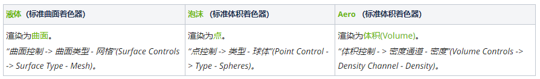
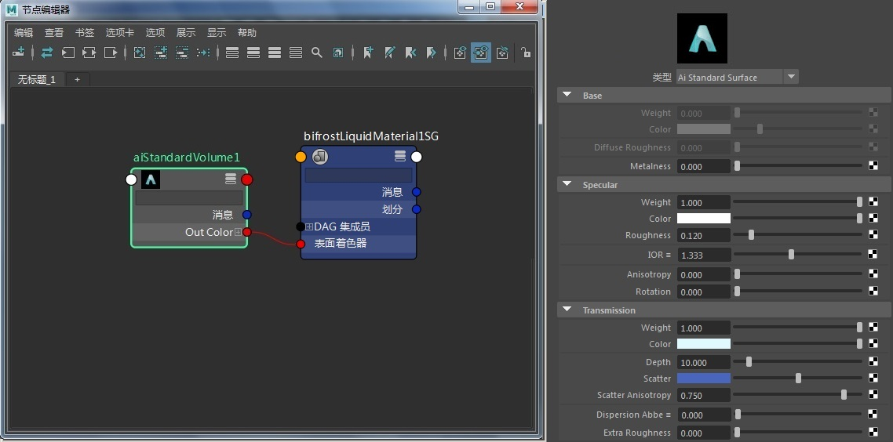
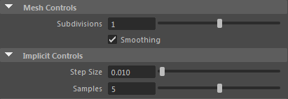
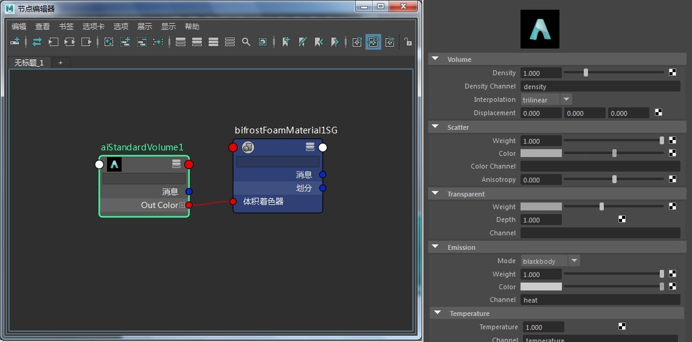
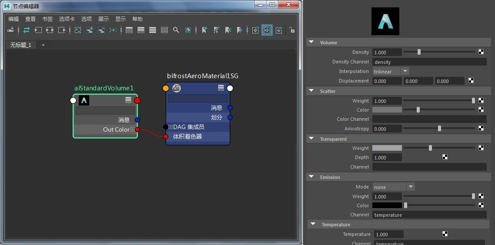
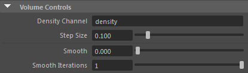
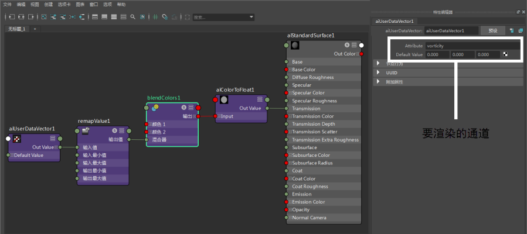
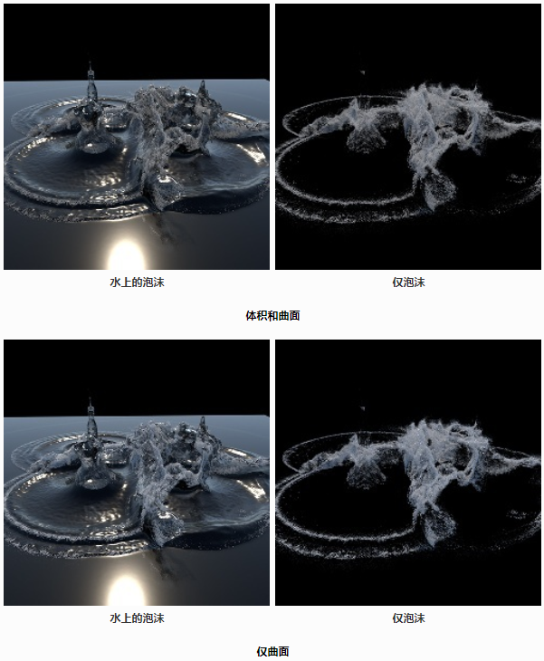

旧版 Bifrost

MtoA 支持使用 Bifrost，Bifrost 是 Maya 中的一种工具，用来创建模拟液体和体积效果。使用 Maya 2018.1 [+] 和 Arnold 5 创建 Bifröst 模拟系统时，会使用 Arnold 随附的一些着色器为每个系统创建一组新的着色图。

每个着色器都连接到与模拟对应的旧有 SG 节点（bifrostLiquidMaterial、bifrostFoamMaterial、bifrostAeroMaterial）。每个着色器选择的属性设置都实现一个默认外观；液体*用来实现深海，泡沫用来实现点粒子，Aero* 用来实现烟雾。
| 有关 Bifrost 工作流示例，请单击此处。 |
|---|
液体
Arnold 可以让液体渲染成网格或隐式曲面。这些属性可在 liquidShape 节点的 Arnold 选项卡下的各个选项卡中找到。默认情况下，为 Bifröst 液体指定 standard_surface 着色器，着色器属性已调整为模拟深水效果。此液体被渲染成多边形网格。我们可以使用 standard_surface 着色器对它进行控制。

为 Bifrost 液体指定 Standard_surface 着色器
液体模拟的渲染输出可使用以下属性进行程序化控制，这些属性位于“液体形状 -> Arnold -> 曲面控制 -> 网格控制”(Liquid Shape -> Arnold -> Surface Controls -> Mesh Controls)之下：

泡沫
我们可以向液体中添加泡沫粒子来创建气泡、泡沫和喷射效果。这些元素在 MtoA 中渲染成支持运动模糊的点或球体。每粒子属性会导出为用户数据。粒子属性由原生泡沫着色器与渐变（漫反射、反射等）控制。可以将泡沫视为体积球体（使用体积着色器）（即具有 step_size 的点）或点/球体基本体（使用曲面着色器）。
您可以为泡沫指定任意类型的着色器（曲面或体积），但使用体积着色器时会忽略点，因此这种情况下将改为渲染球体。
在 MtoA for Maya 2018+ 中，已不再支持 BifrostFoamMaterial 和 BifrostAeroMaterial（它们将不再转换为 Arnold 着色器节点）。
泡沫被渲染为体积基本体。我们可以使用 standard_volume 着色器对它进行控制。

为 Bifrost Aero 指定标准体积着色器
相关控制选项可在 foamShape 节点的“Arnold -> 点控制”(Arnold -> Points Control)选项卡下找到。
在 Maya 2018+ 中，默认情况下不会为 Bifrost 泡沫应用 *standard_volume*。
您可以使用 *standard_volume（如果点步长 > 0）或 *standard_surface（如果点步长 = 0）渲染泡沫。
Aero
与泡沫渲染类似，我们为 Bifröst Aero 指定 standard_volume 着色器，其中“密度通道”(Density Channel)使用 Aero 的烟雾通道。此材质被渲染为体积基本体。

为 Bifrost Aero 指定标准体积着色器
体积控制选项可在 aeroShape 节点的“Arnold -> 体积控制”(Arnold -> Volume Controls)选项卡下找到：

渲染通道
使用工具的用户数据节点，您可以创建一个着色网络用来渲染出 Bifröst 的各个通道。
- 您可以使用 Bifrost 形状的“粒子显示”(Particle Display)部分的“颜色通道重映射”(Color Channel Remap)选项，在视口中以视觉方式呈现漩涡，确定 remapValue 着色器节点中需要的最小/最大值。
- 在 Bifrost 形状的“Arnold”部分，确保“不透明度”(Opacity)已禁用。
- 另外，在“Arnold”部分，您将看到漩涡默认情况下是一个导出通道。您还可以在这里添加其他属性，例如速度等（词与词之间以空格间隔）。
- 对于着色网络，确保将漩涡（或根据上面一点列出的任何通道）作为属性输入 aiUserDataVector 节点。
- 此外，在 remapValue 节点中，确保使用第一点中提到的通过视口通道重映射获得的最小/最大输入值。

导出 Ass 和 Kick
- 使用上述方法，通过 Bifrost 设置 Maya 场景。
- 转至“文件 > 导出全部”(File > Export All)或“导出当前选择”(Export Selection)。
- 将“文件类型”(File type)更改为“ASS 导出”(ASS Export)。
- 在“导出”(Export)子区域中，启用选项“展开程序”(Expand Procedurals)。
- 根据需要配置其他设置并导出文件。
- 使用 Kick 渲染生成的 ass 文件。
对于 Aero 渲染：
- 您还需要附加到 PATH 或库路径环境变量：
Linux：LD_LIBRARY_PATHMac: DYLD_LIBRARY_PATHWindows: PATH
Windows 示例：PATH=C:\Program Files\Autodesk\Bifrost\Maya2018\bin;C:\Program Files\Autodesk\Maya2018\bin2.使用 Kick 渲染 ass 文件时，需要使用“-l”标志指向 Bifrost 程序的 bin 位置。示例 Kick 命令：kick.exe -l C:\Program Files\Autodesk\Bifrost\1.5.0\Arnold-5.0.0.0\bin -l C:\solidangle\mtoadeploy\2018\shaders bifrost_LiquidAeroFoam.0030.ass
ginstance 节点可以覆盖体积容器的 step_size 参数，例如点、多边形网格、立方体和球体。例如，这允许将体积形状的实例着色为曲面（“实例步长”(instance step size)设置为 0，“不透明”(Opaque)设置为关闭，且使用曲面着色器）。
